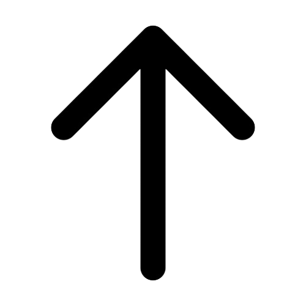

Report lost items or helps other recover they've misplaced.
Report a lost or found item with details and photo.
Get matched with someone who posted a related item.
Meet safely and return the item to its owner.
Lost Item
Found Item
Items Returned
